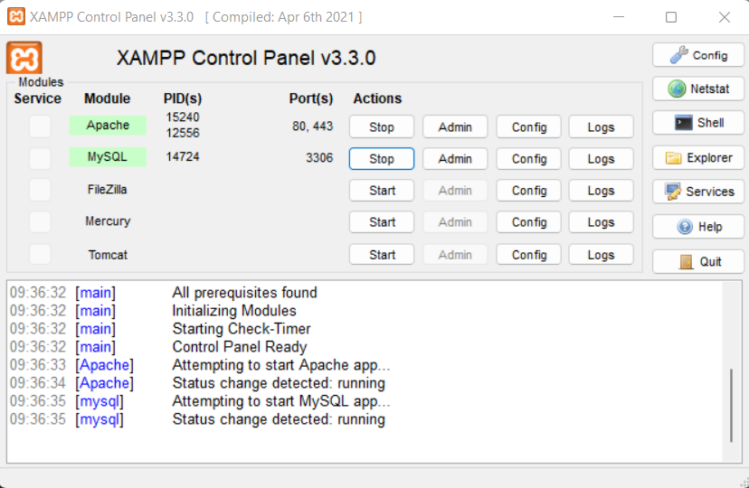
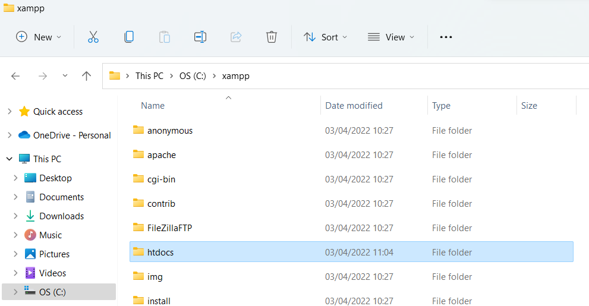
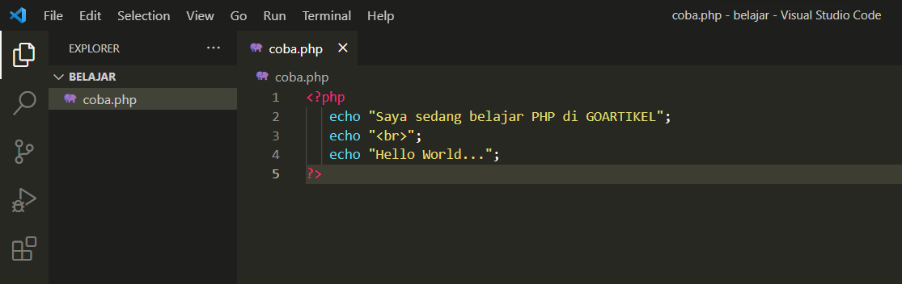

Dewasa ini, banyak pengembang aplikasi yang memanfaatkan web server untuk dapat mengintegrasikan perangkat lunak dengan kebutuhan database secara mudah dan efektif. Langkah tersebut dapat diimplementasikan dengan menggunakan media localhost dalam komputer anda dengan menggunakan tool bernama Xampp.
Definisi sederhana dari Xampp adalah perangkat lunak berbasis web server yang bersifat open source (bebas), serta mendukung di berbagai sistem operasi, baik Windows, Linux, atau Mac OS. Xampp digunakan sebagai standalone server (berdiri sendiri) atau biasa disebut dengan localhost. Hal tersebut memudahkan dalam proses pengeditan, desain, dan pengembangan aplikasi.
XAMPP tersusun atas kependekan dari beberapa kata berikut ini:
Maksudnya adalah, Xampp dalam dijalankan di berbagai perangkat sistem operasi yang ada, misalnya Windows, Linux, Mac OS, dan Solaris. Dari ke semua sistem operasi tersebut, software ini bersifat open source atau dapat digunakan secara gratis.
Apache merupakan aplikasi web server yang bertugas untuk menciptakan halaman website yang benar berdasarkan kode program PHP yang ditulis oleh pengembang web (developer). Memungkinkan juga untuk mengakses sistem database terlebih dahulu untuk mendukung halaman situs yang dihasilkan.
MySQL merupakan salah satu aplikasi database server yang menerapkan bahasa pemrograman SQL (Structured Query Language). Fungsi dari MySQL sendiri adalah untuk mengelola dan membuat sistem basis data secara terstruktur dan sistematis.
PHP adalah bahasa pemrograman khusus berbasis web untuk kebutuhan pada sisi server (back end). Sehingga, PHP sangat memungkinkan untuk membuat suatu halaman website menjadi lebih dinamis dengan menerapkan server-side scripting. PHP juga mendukung manajemen sistem pada Oracle, Postgresql, Microsoft Access, dan lain sebagainya.
Perl merupakan bahasa pemrograman untuk segala kebutuhan (cross platform) yang berfungsi sebagai penunjuk eksistensi dari PHP. Perl biasanya banyak digunakan untuk website development pada sistem berbasis CMS (Content Management System) seperti WordPress.
Sejarah awal terbentuknya Xampp adalah dimulai dari tahap pengembangan yang dilakukan oleh tim proyek yang bernama Apache Friends pada tahun 2002. Tim tersebut terdiri dari tim inti (core), pengembang (development), dan pendukung (support). Proyek ini bertujuan untuk mendukung dan mempromosikan penggunaan dari Apache web server.
Terdapat banyak manfaat dari penggunaan Xampp, berikut merupakan beberapa fungsi utama yang dimiliki oleh tool web server ini.
Pertama, mampu mengatur halaman basis data pada PhpMyAdmin tanpa perlu khawatir terjadi error, dikarenakan anda hanya mengakses pada server lokal komputer saja. Dengan PhpMyAdmin, anda bebas untuk melakukan beberapa perubahan seperti mengedit, menghapus, mengupdate, dan menambahkan user pada database.
Kedua, Laravel merupakan salah satu framework milik PHP yang berfungsi untuk mempermudah programmer dalam mengembangkan tampilan website. Sehingga, dengan penggunaan Xampp akan lebih mudah dalam memodifikasi kode program atau script, serta membuat fitur baru dengan lebih cepat.
Yang terakhir, jika anda ingin belajar WordPress, maka anda dapat memanfaatkan penggunaan dari Xampp tanpa membutuhkan koneksi internet. Sehingga, sangat memudahkan dalam proses pengerjaan front end maupun back end.
Terdapat tiga komponen penting penyusun Xampp, diantaranya adalah sebagai berikut:
Control panel merupakan layanan yang digunakan untuk mengelola Xampp mulai dari mengatur penggunaan database, mengupload file, melakukan konfigurasi terkait proyek website, dan fungsionalitas fitur yang lainnya. Penerapannya akan sama dengan fitur pada CPanel untuk kebutuhan hosting yang bersifat online.
HTdocs, merupakan nama sebuah folder yang menjadi bagian dalam Xampp yang berfungsi sebagai penyimpan file dan dokumen yang nantinya akan ditampilkan pada browser dalam bentuk website. Untuk kapasitas penyimpanan dari HTdocs sendiri menyesuaikan dengan hardisk storage pada perangkat komputer anda.
Peran atau tugas dari PhpMyAdmin adalah sebagai pengatur proses konfigurasi pada MySQL. Untuk membuka akses PhpMyAdmin, anda dapat memasukkan perintah pada web browser dengan menuliskan alamat URL http://localhost/phpmyadmin.
Pada pembahasan yang terakhir, kami akan menjelaskan beberapa tahapan dalam penggunaan Xampp mulai dari proses instalasi hingga contoh implementasinya.
Berikut ini merupakan beberapa langkah untuk menginstall Xampp dengan mudah dan cepat.
Untuk menjalankan aplikasi Xampp, yang pertama harus dilakukan adalah membuka
terlebih dahulu aplikasi tersebut. Kemudian, anda dapat menekan tombol atau button yang bertuliskan
start untuk menjalankan modul Apache dan MySQL (untuk kebutuhan database).

Setelah anda telah memastikan bahwa aplikasi dapat berjalan tanpa ada pesan error, maka anda dapat
mengakses localhost dengan menuliskan alamat URL pada web browser anda.
Server Side Programming Language, atau Bahasa Pemrograman sisi server, adalah bahasa pemrograman web, yang letak source code nya nanti hanya ada di webserver. Bahasa ini source code nya tidak akan muncul di sisi client (browser). Client/browser hanya menerima keluaran dari kode program tersebut.
nah, Apa saja sih pemrograman server-side itu? nah, ini dia
Macam-macam bahasa pemrograman server-side:
Bahasa pemrograman PHP menjadi salah satu bahasa yang paling sering digunakan untuk server
side
programming. Meskipun PHP termasuk bahasa pemrograman tertua namun kemampuannya masih dapat
diandalkan untuk pengembangan web saat ini.
Diketahui terdapat sekitar 80 % website yang berjalan menggunakan bahasa pemrograman ini.
Selain
itu PHP juga menjadi bahasa pemrograman pertama yang dirancang secara khusus untuk website
sehingga penggunaanya dapat mendominasi di era Web 2.0 tahun 2000an.
PHP sering digunakan untuk mengembangkan situs web statis, web dinamis, atau aplikasi Web. PHP
juga dapat berjalan pada hampir semua operating system termasuk Linux, Microsoft Windows,
macOS,
dan lain-lain..
Node.js adalah bahasa pemrograman Javascript sisi server yang dibangun di Google Chrome V8
JavaScript Engine. Salah satu kelebihan Node.js adalah Anda dapat menggunakan Javascript untuk
rendering front-end dan menggunakannya kembali di sisi back-end.
Bahasa ini dirilis pada tahun 2009 dan sudah semakin berkembang. Node.js banyak digunakan oleh
para developer untuk mengembangkan konsol, desktop, website, serta web app. Node.js juga dapat
berjalan diberbagai platform seperti Windows, Linux, Unix, Mac OS X, dan lain-lain.
Ketika menghandle file request, Node.js dapat menghilangkan proses menunggu sehingga dapat
menangani file request selanjutnya dengan cepat. Sebagian besar situs web populer sudah
memanfaatkan Node.js dalam pengembangan layanannya. Beberapa web tersebut seperti Netflix,
PayPal, Uber, dan LinkedIn
Java bisa dibilang platform paling kuat untuk pengembangan web sisi server saat ini. Bahasa
pemrograman ini bersifat open source, berorientasi objek, tidak memerlukan infrastruktur
perangkat keras tertentu, mudah dikelola, serta memiliki tingkat keamanan yang baik.
Pada awalnya, Java sering digunakan sebagai alternatif untuk C ++ yang banyak digunakan dalam
aplikasi bisnis tahun 90-an. Namun sampai saat ini, Java justru memiliki popularitas yang
lebih
baik daripada C ++. Java dapat digunakan untuk berbagai pengembangan sistem seperti mobile app
(terutama untuk Android), desktop app, web applications, games, dan masih banyak lagi.
Selain itu, Java juga dapat berjalan diberbagai platform seperti Windows, Mac, Linux, dan
lain-lain. Beberapa situs populer yang dikembangkan dengan Java dalah Google, Amazon, dan
eBay.
Python menjadi salah satu bahasa pemrograman yang banyak digunakan oleh pemula. Bahasa ini
juga
dianggap mudah untuk dipelajari karena sintaks yang dimiliki cukup sederhana dan terlihat
mirip
dengan Bahasa Inggris. Python juga menyediakan library yang besar dengan begitu banyak fungsi
pra-kode sehingga Anda tidak perlu lagi menulis fungsi buatan sendiri.
Meskipun mudah untuk digunakan, Python mempunyai performa yang baik untuk berbagai keperluan
seperti pengembangan web sisi server, perangkat lunak, serta pembuatan system scripting.
Selain
itu, Python juga memiliki kemampuan untuk menangani data besar dan melakukan matematika yang
kompleks. Contoh situs web terkenal yang dibangun dengan Python adalah Youtube, Instagram,
Dropbox, Quora.
Ruby adalah bahasa pemrograman yang berorientasi pada objek dan bersifat open source. Bahasa
ini dikembangkan oleh Yukihiro Matsumoto pada tahun 1995.
Ruby populer untuk digunakan sebagai bahasa pemrograman untuk mengembangkan web applications.
Rails adalah framework paling populer untuk Ruby, dan framework ini mudah dioperasikan oleh
programmer. Tidak heran jika sebagian besar startup lebih suka memulai aplikasi mereka dengan
Ruby on Rails. Berapa website yang menggunakan Ruby adalah GitHub, Airbnb, Shopify, dan masih
banyak lagi.
Sebelumnya kita mempraktekkan cara menjalankan XAMPP
Kali ini kita akan mempraktekkan cara menjalankan PHP
Agar dapat mengakses halaman PHP dari web browser, maka kita harus menempatkan file PHP dalam folder khusus yang merupakan folder home dari web server. Pada aplikasi XAMPP, folder tersebut adalah folder htdocs yang berada di C:\xampp\htdocs.
Seluruh file PHP harus diletakkan dalam folder htdocs ini. Agar memudahkan pencarian file, saya akan membuat folder “belajar” di dalam folder htdocs. Nantinya file kita akan ada di dalam folder belajar ini.
File PHP pada dasarnya merupakan file text biasa yang bisa dibuat menggunakan aplikasi notepad bawaan windows, namun untuk penggunaan yang lebih baik, kita bisa pakai aplikasi text editor khusus programming seperti VS Code atau Sublime Text.
Sebagai text-editor alternatif, anda bisa mencoba Visual Studio Code atau sering disingkat sebagai VS Code. Aplikasi editor ini merupakan salah satu teks editor favorit banyak programmer. VS Code bisa di unduh secara gratis dari web resminya KLIK DISNI
Kembali ke folder belajar yang berada di C:\xampp\htdocs\belajar, kita akan membuat sebuah file baru. Untuk pembuatan file ini bisa menggunakan VS Code.
Buka folder "belajar" dengan VS Code , buat file dengan nama "coba.php". File tersebut akan berada pada alamat C:\xampp\htdocs\belajar\coba.php. Untuk menjalankannya, harus menggunakan web browser.
Jika Web Server Apache belum berjalan, silahkan jalankan terlebih dahulu seperti
yang sudah kita bahas pada tutorial cara menjalankan XAMPP.
Lalu buka browser, dan ketik alamat berikut: localhost/belajar/coba.php pada address bar dan tekan Enter.
Selamat! Kita telah berhasil menjalankan sebuah file PHP, walaupun file PHP
tersebut tidak mengerjakan apa-apa selain menampilkan beberapa baris text.
Sebelum mengakhiri tutorial ini, ada beberapa hal yang perlu diperhatikan terkait cara menjalankan file
PHP:
XAMPP: Definisi, Fungsi, Komponen, dan Cara Kegunaannya
Post , 19 Mei 2022
Apa itu Server-Side?
Post , 19 Mei 2022
Tutorial Belajar PHP: Cara menjalankan file PHP dengan XAMPP
Post , 19 Mei 2022
Pengertian XAMPP Lengkap dengan Cara
Menggunakannya
NiagaHoster , 20 Mei 2022
Apa itu Server-Side-Progamming?
eCampus , 21 Mei 2022
Tutorial Belajar PHP dasar
PetaniKode , 22 Mei
2022
Apa itu PHP?
Hostinger , 22 Mei
2022